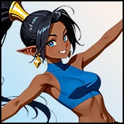

Player wiki noticeThis community-maintained page may contain gameplay, story, and mature-content spoilers.

概览
Aziza 是个169岁的半精灵女巫师 国王德米斯内的Arcane商店她目前的内容包括三个技能课、两个个人心跳、一个集市日期、个人和社区的自动场景、文物指导、药剂采购、妓院促销、精心制作的礼物、巫术培训、Gremaoire升级和元素石连接。
快速状态
| 属性 | 数值 |
|---|---|
| 年龄/种族 | 169 / 半叶 |
| 大纪元/对齐 | 中世纪/中立 |
| 地点 | 阿尔卡内商店,国王的德米斯内 |
| 商店和NPC小时 | 每天早上10点到6点 |
| 最喜欢的数据 | 魅力40、神秘30、能力45 |
| 特殊关系技能 | 阿尔卡内知识 |
| 教学 | 玛娜海峡、阿尔卡内知识、魅力 |
| 工艺 | Prismatic 拼写标记 |
| 高级培训 | 巫术路径; 5~6级 |
会议Aziza
输入 早上10时至6时在Arcane商店. 阿卡内商店 引入自动触发一次并给出 5个基本感情 她不需要妓院招聘或地牢救援
与 Aziza 交谈 带 15分钟,给出 1个基本感情 并可用于 每日四次A级 魔术师 可以额外使用一次性 显示魔法特技 (单位:千美元) 15分钟5次直接感情此检查您实际 魔术师熟练程度不仅仅是一个高的神秘统计。
关系与课程
- 到达 确认 前两个技能课。 玛娜频道 费用 120分钟,300美元和50个能量,并给出 10个基本感情. 阿尔卡内知识 额外要求 情报费用 180分钟,400美元,40个能量和60个平静,并给出 10个基本感情.
- Arcane知识也是Aziza的 特殊关系技能,因此学习它通过共享计算来改善后续的关系收益.
- 时 已知,学习 诱惑 (单位:千美元) 150分钟,400美元和70个能量获取 20个基本感情。如果您还 拥有 Rose& Thorn( T)参观商店 聊城镇价值 8个基础感情 加上选择
- 时 已知和交流. 76编辑 Arcane 掌握路径 一次: 30分钟, +1 神秘性, +1 向导块 和 13个直接的感情。通信是必需的状态;神秘75不能满足这个大门。
- 时 知识选择 阿尔卡内之旅,第一个家H2H。 60分钟15个能量5发子弹
- 时 朋友们,自动访问 {\fn黑体\fs20\shad2\2aH82\3aH20\4aH33\fscx95\3cH592001\be1}沃兹所持的 场景,价值 12个基调 加上选择。您也可以一次性启动 上午10时至3时 (单位:千美元) 120分钟,75美元和40美元.
- 时 关闭朋友选择 旧书 (单位:千美元) 75分钟15个能量这个舞台也开启了她的妓院推广服务如果你拥有妓院。
- 时 在爱中,考虑 巫师, 第六次装订 和 亲密的结合,各有以下各条先决条件。
学习相应的技能后, 课程就消失了。两个H2Hs各完成一次。她目前的路线没有单独授权的公寓访问 。 个人行动从 阿尔卡内商店包括巴扎尔日期。
个人行动参考
| 行动 | 要求 | 费用 | 奖励/限制 |
|---|---|---|---|
| 与 Aziza 交谈 | 开店 | 15分钟 | 1个基本感情;4个/天 |
| 显示魔法特技 | 魔术师熟练程度 | 15分钟 | 5个直接的感情;一次 |
| 玛娜频道 | 确认;未掌握技能 | 120分钟,300美元,50个能量 | 技能; 10个基本感情;一次 |
| 阿尔卡内知识 | 确认,情报20;未学到的技能 | 180分钟 400美元 40个能量 60个平静 | 技能; 10个基本感情;一次 |
| 诱惑 | 已知;未学到技能 | 150分钟,400美元,70个能量 | 技能;20个基础感情;一次 |
| Arcane 掌握路径 | 已知,通讯 | 30分钟 | +1 神秘,+1 魔法师的血块, 13 个直接的感情;一次 |
| 阿尔卡内之旅 | 知识 | 60分钟,15个能量 | H2H 选择点;一次 |
| 旧书 | 关闭朋友 | 75分钟,15个能量 | H2H 选择点;一次 |
| 巴扎尔日期 | 朋友;上午10时至3时 | 120分钟,75美元,40个能量 | 5个基本爱加选择;一次 |
| 手工业 Prismatic 拼写布局 | 携带所需的怪物滴水 | 2 灵魂线 4 闪烁心律 4 吉尔德心律 | 一个胸针;可重复 |
| 巫师 | 在爱中;有偿准入;Lime被招募;40个小老板被击败;Sashina的礼物学习;路径未获得 | 300分钟,150个能量,150个平静 | 魔法师路径,30个基础 爱加选择;一次 |
| 第六次装订 | 在爱中; 付费访问; Greamoire 精确的5级 | 180分钟,80个能量,40个平静 | 6级,10个基本感情加选择;一次 |
| 亲密的结合 | 在爱中; 拥有元素石 | 60分钟 | +1 石层;一次/天 |
列出的关系奖励是基础值. 最喜欢的STAT在达到阈值时会增加奖金,特殊的关系技巧会在共享随机卷前将调整的基数增加一倍. 设备,buffs和对齐可以进一步改变最终的奖励. 提高爱心不会取代追求旗帜或更早的心跳.
个人和社区自动场景
| 自动场景 | 地点 | 所需资源 | 基地奖励 |
|---|---|---|---|
| 午夜谜团 | 隐蔽的圣地 | Jade: 精通+; Aziza:已知+; Ben Arthur:确认+; 休假时不离开: Jade; 10 PM–午夜/午夜-2 AM | 0 |
| Grace和魔法 | 阿尔卡内商店 | Esperanza:确认+;Aziza:确认+;上午10时至6时 | 0 |
| 午夜星际迷航 | 隐蔽的圣地 | Aziza:确认+;Ben Arthur:确认+;10 PM-午夜/午夜-3上午 | 0 |
| 聊城镇 | 阿尔卡内商店 | Aziza:已知+;Rose& Thorn拥有;10 AM-6 PM | 8 |
| {\fn黑体\fs20\shad2\2aH82\3aH20\4aH33\fscx95\3cH592001\be1}沃兹所持的 | 阿尔卡内商店 | Aziza:朋友+;上午10时至6时 | 12 |
| 步行图书馆 | 阿尔卡内商店 | Blinky: 朋友+; Aziza: 朋友+; 10 AM-6 PM | 7 |
| 阿卡内商店 | 阿尔卡内商店 | 无附加先决条件;上午10时至6时 | 5 |
所有这些都是一次性的场景. 步行图书馆 需求 Blinky和Aziza在朋友处 并给出 对每个人的7个基本感情还有选择 Grace和魔法 需求 与Esperanza和Aziza同时确认 在店铺里
两个晚上的场景发生在 隐蔽的圣地,在Aziza正常的店铺时间表之外. 午夜星际迷航 需求 以Aziza和Ben Arthur确认从 上午10时至3时. 午夜谜团 而不是需要 知Aziza,知Ben Arthur,知Jade,与Jade家而不是度假,从 上午10时至2时。午夜包括在两个夜间窗口中。
心对心的选择
阿尔卡内之旅
| 圆 | 最高基点选择 | 基点 |
|---|---|---|
| 1 | 那些页子认为我值得看到什么? | 10 |
| 2 | 学了多少退款? | 12 |
| 3 | 稳住凳子 有用 绝对有用 | 12 |
| 4 | 你的秘密是安全的 星光更适合你 | 12 |
| 5 | 我马上回来,得有人鼓掌 | 12 |
旧书
| 圆 | 最高基点选择 | 基点 |
|---|---|---|
| 1 | 那我就不离开这个地方了 | 12 |
| 2 | 沃肯,所以有人会带着它睡觉吗? | 12 |
| 3 | 知道你是谁,这是最难得的 | 14 |
| 4 | 然后王国不需要军队,它需要一位巫师. | 14 |
| 5 | 那就停止编曲 Aziza. | 14 |
| 6 | 没有错,我们都是这样,你知道的 | 14 |
心对心选择点在完成时累积并使用共享关系计算. 列出的点是基础值,而不是保证最终的感情增益.
可选高点答案
这些特殊答案在满足其列出的技巧或stat要求时会出现。在该回合中选择解锁的特殊答案来获取下面更高的基础奖励。普通答案仍然可以完成对话;这些点与其他 H2H 选择输入相同的亲情计算。
| 心对心 | 圆 | 特别答复要求 | 基点 |
|---|---|---|---|
| 阿尔卡内之旅 | 1 | Arcane 知识技能 | 18个而不是10个 |
| 阿尔卡内之旅 | 4 | 冷漠技巧 | 18个而不是12个 |
| 旧书 | 1 | Arcane 知识技能 | 18个而不是12个 |
| 旧书 | 3 | 冷漠技巧 | 18个而不是14个 |
场景选择
| 场景 | 按选择顺序计算,最高基础奖金 |
|---|---|
| 午夜星际迷航 | 回应+8 +9 +10 |
| 与 Aziza 的集市日期 | 爱心/欢乐/欢乐+3— 爱心/欢乐+4— 爱心/欢乐/欢乐+5 |
| 聊城镇 | 照顾/娱乐+3 |
| {\fn黑体\fs20\shad2\2aH82\3aH20\4aH33\fscx95\3cH592001\be1}沃兹所持的 | 照顾+4 |
| 魔法师的觉醒 | 照顾+5 |
| 第六个约束 | 护理/娱乐/便利+2 |
| 步行图书馆 | 仁爱+2— 有趣+2 |
| 阿卡内商店 | 照顾+4 |
市场日期 每一步骤对照顾、有趣或花样平等奖金:+3 +4 +5在午夜的星际迷航中 神秘主义 给予Aziza+10和Ben+7; 智慧 给予Aziza+8和Ben+10; 余额 给 Aziza +9 和 Ben +8 。
Arcane商店服务
除了Aziza的个人互动菜单之外,这些是商店的动作,在商店开放时可以使用.
| 服务 | 费用 | 结果 |
|---|---|---|
| 魔法艺术教程 | 60分钟,200美元 | +3 向导 clut, 3 个基情; 一次 |
| 书面备忘录 | 30分钟,1000美元; 拥有一头红宝石 | 普通职等 1 = 2 升级 |
| 时间扭曲 | 5分钟,300美元,1个史诗成分 | 一次消耗;8次基本感情 |
| 聚焦爱丽丝 | 5分钟,300美元,1个史诗成分 | 一个焦点消耗; 8个基础感情 |
| 询问 Aziza 以传播单词 | 500美元; 密友; Rose& Thorn 拥有 | 增加1个妓院促进级别;一次 |
寻常 书面备忘录 采购升级到 2级高层次有其它来源。 魔法莫普、魔法西兰特和工人护身符 妓院管理。
手工业 Prismatic 拼写布局 消耗量 2号灵魂线,4号闪烁的心形和4号吉尔德心形 添加 一个胸针 用于您设计的礼物。它没有配置额外的时间、黄金或爱慕奖。当您有另一套完整的材料时,再制作另一套。胸针被几个角色的特殊礼物训练路线所使用;它本身并不完成这些礼物的场景。
术士培训
选择 巫师 只有在满足了所有这些要求之后,才能在商店:
- 爱上Aziza 和进入 已支付版本.
- Lime,女佣4人,被招募满足她的收购旗。
- 那个 40个小老板被打倒.
- Sashina的礼物 已经学会了。
- 那个 未获得的巫术路径.
行动费用 300分钟,150个能量,150个平静运行 魔法师的觉醒价值 30个基本感情 加其选择奖赏,并初始化 巫师战斗路径这与魔术师的技巧不同
Sashina的礼物,完成 最后准备 Sashina 输入 圣堂 之后 Story 击打 55时, 爱上Sashina。单独采取的行动 180分钟200个能量 在她展示阶段的怀孕限制期间无法进入。完成该限制将传授必要的技能。该指南留给你了解现场的故事结果。
第六块捆绑和元素石
第六次装订 要求 与Aziza相爱,在5级有报酬的进入和Greanoire费用 180分钟,80个能量,40个平静,触发器 第六个约束,给出 10个基本感情 加上一个选择奖金, 和升级的宝石 从5国到6国完成一次 已经超过5级的Greenoire不能满足精确的检查要求
单独获取 元素石头 通过开采游戏中罕见的键石牌。 在爱中,携带并使用 亲密的结合 使用成本 60分钟,将其水平提高 1 并可用于 每天一次它没有配置的黄金、能量或直接的感情奖,拥有宝石并不能取代拥有石头。
使用Gastoff建造美纳杰里
Aziza还参与 建设美纳吉里从 Gastoff在铁匠店首先建造妓院,到达 妓院声誉. 9,并且确保美食店还没有建成。 美纳杰里委员会 费用 200分钟,2 000 000美元,50个史诗材料,50个史诗材料和50个史诗织物. 完成它的建造 对Gastoff和Aziza的15个基本感情这是一个单独的建筑项目;她的个人约会或交谈不需要。
如果进程 Stalls 显示
- 用店里的东西 上午10时-6时 小时; Bazaar 日期缩小 上午10时至下午3时 启动窗口。
- 知识需求 情报; Arcane 掌握路径需要 来 文. 75.
- 城市的谈话和升级服务需要 妓院所有权而不是仅仅去拜访它。
- 家庭H2H,商店服务,自动场景和日期都有单独的完成记录.
- 巫师需要 所有五个先决条件;在爱独自是不够的。
- 第六项约束要求 准确的5级一个未完成的场景和付费访问。
- 对于夜间社区场景,去 隐蔽的圣地检查其他角色的感情和假期状况
相关页面
Overview
Aziza is a 169-year-old half-elf sorceress who runs the Arcane Shop in King's Demesne. Her current content includes three skill lessons, two personal heart-to-hearts, a bazaar date, automatic personal and community scenes, artifact instruction, potion purchases, brothel promotion, crafted gifts, Sorcerer training, grimoire upgrades and Elemental Stone bonding.
Quick Stats
| Attribute | Value |
|---|---|
| Age / race | 169 / Half-elf |
| Era / alignment | Medieval / Neutral |
| Location | Arcane Shop, King's Demesne |
| Shop and NPC hours | 10 AM–6 PM, every day |
| Favorite stats | Charm 40, Mystic 30, Ability 45 |
| Special relationship skill | Arcane Knowledge |
| Teaches | Mana Channeling, Arcane Knowledge, Enchantment |
| Crafts | Prismatic Spell Brooch |
| Advanced training | Sorcerer path; grimoire level 5 → 6 |
Meeting Aziza
Enter the Arcane Shop from 10 AM–6 PM. The Arcane Shop introduction triggers automatically once and gives 5 base affection plus a choice bonus. She does not require brothel recruitment or a dungeon rescue.
Talk to Aziza takes 15 minutes, gives 1 base affection and can be used four times per day. A Magician can additionally use the one-time Show Magic Trick for 15 minutes and 5 direct affection. This checks your actual Magician proficiency, not merely a high Mystic stat.
Relationship and Lesson Walkthrough
- Reach Acknowledged for the first two skill lessons. Mana Channeling costs 120 minutes, $300 and 50 energy, and gives 10 base affection. Arcane Knowledge additionally requires Intelligence 20, costs 180 minutes, $400, 40 energy and 60 calm, and gives 10 base affection.
- Arcane Knowledge is also Aziza's special relationship skill, so learning it improves subsequent relationship gains through the shared calculation.
- At Known, learn Enchantment for 150 minutes, $400 and 70 energy, gaining 20 base affection. If you also own the Rose & Thorn, visit the shop for Talk of the Town, worth 8 base affection plus choices.
- At Known and Communication 75, use Arcane Mastery Path once: 30 minutes, +1 Mystic, +1 Wizard clout and 13 direct affection. Communication is the required stat; Mystic 75 does not satisfy this gate.
- At Acquaintance, select A Tour of the Arcane, the first home H2H. It takes 60 minutes and 15 energy, with five rounds.
- At Friend, visit for the automatic What the Wards Hold scene, worth 12 base affection plus choices. You can also start the one-time Bazaar Date between 10 AM and 3 PM for 120 minutes, $75 and 40 energy.
- At Close Friend, select The Old Book for 75 minutes and 15 energy, with six rounds. It has no separately configured prerequisite requiring the first H2H. This stage also unlocks her brothel-promotion service if you own the brothel.
- At In Love, consider Sorcerer, Sixth Binding and Intimate Bonding, each with its separate prerequisites below.
Lessons disappear once the corresponding skill is learned. The two H2Hs each complete once. Her current route has no separately authored apartment visit. Personal actions start from the Arcane Shop, including Bazaar Date.
Personal Action Reference
| Action | Requirement | Cost | Reward / limit |
|---|---|---|---|
| Talk to Aziza | Shop open | 15 minutes | 1 base affection; 4/day |
| Show Magic Trick | Magician proficiency | 15 minutes | 5 direct affection; once |
| Mana Channeling | Acknowledged; skill unlearned | 120 minutes, $300, 50 energy | Skill; 10 base affection; once |
| Arcane Knowledge | Acknowledged, Intelligence 20; skill unlearned | 180 minutes, $400, 40 energy, 60 calm | Skill; 10 base affection; once |
| Enchantment | Known; skill unlearned | 150 minutes, $400, 70 energy | Skill; 20 base affection; once |
| Arcane Mastery Path | Known, Communication 75 | 30 minutes | +1 Mystic, +1 Wizard clout, 13 direct affection; once |
| A Tour of the Arcane | Acquaintance | 60 minutes, 15 energy | H2H choice points; once |
| The Old Book | Close Friend | 75 minutes, 15 energy | H2H choice points; once |
| Bazaar Date | Friend; 10 AM–3 PM | 120 minutes, $75, 40 energy | 5 base affection plus choices; once |
| Craft Prismatic Spell Brooch | Carry required monster drops | 2 Soul Thread, 4 Shimmering Heartscale, 4 Gilded Heart | One brooch; repeatable |
| Sorcerer | In Love; paid access; Lime recruited; floor 40 miniboss defeated; Sashina's Gift learned; path not acquired | 300 minutes, 150 energy, 150 calm | Sorcerer path, 30 base affection plus choice; once |
| Sixth Binding | In Love; paid access; grimoire exactly level 5 | 180 minutes, 80 energy, 40 calm | Grimoire level 6, 10 base affection plus choice; once |
| Intimate Bonding | In Love; own Elemental Stone | 60 minutes | +1 stone level; once/day |
Listed relationship rewards are base values. Favorite stats add bonuses when their thresholds are met, and the special relationship skill doubles the adjusted base before the shared random roll. Equipment, buffs and alignment can further change the final reward. Raising affection does not replace quest flags or earlier heart-to-hearts.
Automatic Personal and Community Scenes
| Automatic scene | Location | Requirements | Base reward |
|---|---|---|---|
| The Midnight Mystery | Secluded Sanctuary | Jade: Acquaintance+; Aziza: Known+; Ben Arthur: Acknowledged+; Not away on vacation: Jade; 10 PM–midnight / midnight–2 AM | 0 |
| Grace and Magic | Arcane Shop | Esperanza: Acknowledged+; Aziza: Acknowledged+; 10 AM–6 PM | 0 |
| The Midnight Stargazer | Secluded Sanctuary | Aziza: Acknowledged+; Ben Arthur: Acknowledged+; 10 PM–midnight / midnight–3 AM | 0 |
| Talk of the Town | Arcane Shop | Aziza: Known+; Rose & Thorn owned; 10 AM–6 PM | 8 |
| What the Wards Hold | Arcane Shop | Aziza: Friend+; 10 AM–6 PM | 12 |
| The Walking Library | Arcane Shop | Blinky: Friend+; Aziza: Friend+; 10 AM–6 PM | 7 |
| The Arcane Shop | Arcane Shop | No additional prerequisite; 10 AM–6 PM | 5 |
All of these are one-time scenes. The Walking Library needs both Blinky and Aziza at Friend and gives 7 base affection to each, plus choices. Grace and Magic needs Acknowledged with both Esperanza and Aziza at the shop.
The two nighttime scenes happen at the Secluded Sanctuary, outside Aziza's normal shop schedule. The Midnight Stargazer needs Acknowledged with Aziza and Ben Arthur, from 10 PM–3 AM. The Midnight Mystery instead needs Known with Aziza, Acknowledged with Ben Arthur and Acquaintance with Jade, with Jade home rather than on vacation, from 10 PM–2 AM. Midnight is included in both overnight windows.
Heart-to-Heart Choices
A Tour of the Arcane
| Round | Highest base-point choice | Base points |
|---|---|---|
| 1 | And what do the pages think I deserve to see? | 10 |
| 2 | How many refunds did it take to learn that? | 12 |
| 3 | steadying the stool Useful. Definitely useful. | 12 |
| 4 | Your secret is safe. Starlight suits you better anyway. | 12 |
| 5 | I'll be back. Someone has to applaud the distillations. | 12 |
The Old Book
| Round | Highest base-point choice | Base points |
|---|---|---|
| 1 | Then I'm not moving from this spot. | 12 |
| 2 | Woken. So anyone could be carrying it asleep? | 12 |
| 3 | Knowing who you are. The rarest qualification there is. | 14 |
| 4 | Then the kingdom doesn't need an army. It needs one sorcerer. | 14 |
| 5 | Then stop being composed, Aziza. | 14 |
| 6 | No blame. That was all us, and you know it. | 14 |
Heart-to-heart choice points accumulate and use the shared relationship calculation at completion. The listed points are base values, not guaranteed final affection gains.
Optional Higher-Point Answers
These special answers appear when their listed skill or stat requirement is met. Choose the unlocked special answer in that round for the higher base reward below. The ordinary answers still complete the conversation; these points enter the same affection calculation as other H2H choices.
| Heart-to-heart | Round | Special-answer requirement | Base points |
|---|---|---|---|
| A Tour of the Arcane | 1 | Arcane Knowledge skill | 18 instead of 10 |
| A Tour of the Arcane | 4 | Empathy skill | 18 instead of 12 |
| The Old Book | 1 | Arcane Knowledge skill | 18 instead of 12 |
| The Old Book | 3 | Empathy skill | 18 instead of 14 |
Scene Choice Bonuses
| Scene | Highest base bonuses, in choice order |
|---|---|
| The Midnight Stargazer | Response +8 → Response +9 → Response +10 |
| Bazaar Date with Aziza | Caring/Funny/Flirty +3 → Caring/Funny/Flirty +4 → Caring/Funny/Flirty +5 |
| Talk of the Town | Caring/Funny +3 |
| What the Wards Hold | Caring +4 |
| The Sorcerer's Awakening | Caring +5 |
| The Sixth Binding | Caring/Funny/Flirty +2 |
| The Walking Library | Kind +2 → Funny +2 |
| The Arcane Shop | Caring +4 |
The Bazaar Date gives equal bonuses for Caring, Funny or Flirty at each step: +3 → +4 → +5, so there is no affection advantage to one category there. At Midnight Stargazer, Mystical gives Aziza +10 and Ben +7; Wisdom gives Aziza +8 and Ben +10; Balanced gives Aziza +9 and Ben +8.
Arcane Shop Services
These are shop actions in addition to Aziza's personal interaction menu, available while the shop is open.
| Service | Cost | Result |
|---|---|---|
| Magical Artifact Tutorial | 60 minutes, $200 | +3 Wizard clout, 3 base affection; once |
| Grimoire | 30 minutes, $1,000; own a grimoire | Ordinary level 1 → 2 upgrade |
| Time Distortion | 5 minutes, $300, 1 epic ingredient | One Time consumable; 8 base affection |
| Focus Elixir | 5 minutes, $300, 1 epic ingredient | One Focus consumable; 8 base affection |
| Ask Aziza to Spread the Word | $500; Close Friend; Rose & Thorn owned | Adds 1 brothel promotion level; once |
The ordinary Grimoire purchase upgrades to level 2; it is not a repeatable route through levels 3–6. Higher levels have other sources. The shop also sells Enchanted Mop, Enchanted Sealant and Worker Amulet for brothel management.
Craft Prismatic Spell Brooch consumes 2 Soul Thread, 4 Shimmering Heartscale and 4 Gilded Heart and adds one brooch to your crafted gifts. It has no configured additional time, gold or affection award. Craft another whenever you have another full set of materials. The brooch is used by several characters' special-gift training routes; crafting it does not itself complete those gift scenes.
Sorcerer Training
Select Sorcerer at the shop only after all of these requirements are met:
- In Love with Aziza and access to the paid version.
- Lime, maid 4, recruited, satisfying her acquisition flag.
- The floor 40 miniboss recorded as defeated.
- Sashina's Gift already learned.
- The Sorcerer path not already acquired.
The action costs 300 minutes, 150 energy and 150 calm. It runs The Sorcerer's Awakening, worth 30 base affection plus its choice reward, and initializes the Sorcerer combat path. This is distinct from the Magician proficiency used by Show Magic Trick.
For Sashina's Gift, finish A Final Preparation with Sashina in the Shrine Altar Chamber after Story Beat 55, at In Love with Sashina. That separate action takes 180 minutes and 200 energy and is unavailable during her showing-stage pregnancy restriction. Its completion teaches the required skill. This guide leaves the scene's story outcome for you to discover.
Sixth Binding and Elemental Stone
Sixth Binding requires In Love with Aziza, paid access and a grimoire at exactly level 5. It costs 180 minutes, 80 energy and 40 calm, triggers The Sixth Binding, gives 10 base affection plus a choice bonus, and upgrades the grimoire from 5 to 6. It completes once. A grimoire already above level 5 does not satisfy the exact-level check.
Separately, obtain the Elemental Stone through the mining game's rare key-stone tiles. At In Love, carry it and use Intimate Bonding with Aziza in the shop. Each use costs 60 minutes, raises its level by 1 and can be used once per day. It has no configured gold, energy or direct affection award. Owning a grimoire does not replace owning the stone.
Building the Menagerie with Gastoff
Aziza also participates in Building the Menagerie, commissioned from Gastoff at the Blacksmith Shop. Build the brothel courtyard first, reach brothel reputation 9, and make sure the menagerie is not already built. Commission Menagerie costs 200 minutes, $2,000,000, 50 epic materials, 50 epic ingredients and 50 epic fabrics. Completing its construction gives 15 base affection to Gastoff and Aziza. This is a separate construction project; it is not required for her personal dates or conversations.
If Progress Stalls
- Use the shop's 10 AM–6 PM hours; Bazaar Date has the narrower 10 AM–3 PM start window.
- Arcane Knowledge needs Intelligence 20; Arcane Mastery Path needs Communication 75.
- Talk of the Town and the promotion service require brothel ownership, rather than merely visiting it.
- Home H2Hs, shop services, automatic scenes and the date have separate completion records.
- Sorcerer needs all five prerequisites; In Love alone is not enough.
- Sixth Binding requires exactly level 5, an unfinished scene and paid access.
- For nighttime community scenes, go to the Secluded Sanctuary, not the closed shop, and check the other characters' affection and vacation status.
Related Pages
Text adapted from the community-maintained Chronoromancer Wiki under CC BY-SA 4.0.